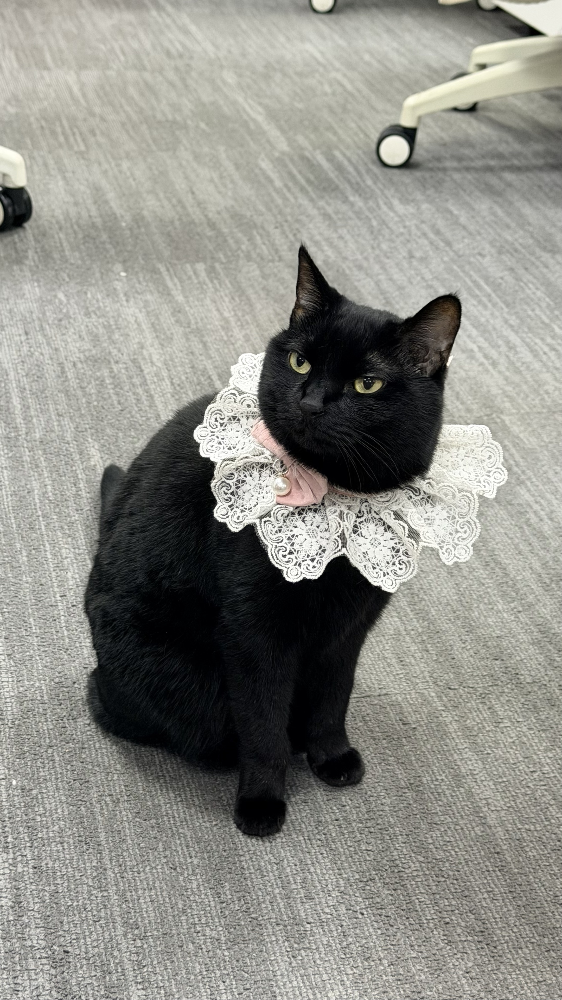
真实日常
正式亮相
戴上蕾丝领的 Monkey 像临时接管了整个会场，表情写着：请开始汇报。
CYBER CAT ARCHIVE / 黑猫主档案
一只黑猫，白天监督排期，夜里接管弹幕系统；看似安静，实则把每个角落都纳入自己的巡逻范围。
MIXED MEMORY LOG
这条时间线不区分“现实”和“想象”。对 Monkey 来说，纸袋是入口，工位是控制台，海底遗迹只是下一次巡逻路线。

戴上蕾丝领的 Monkey 像临时接管了整个会场，表情写着：请开始汇报。
粉蓝光从小电视和弹幕条上流过，Monkey 负责在深夜调试代码、创作后台和二次元能量。
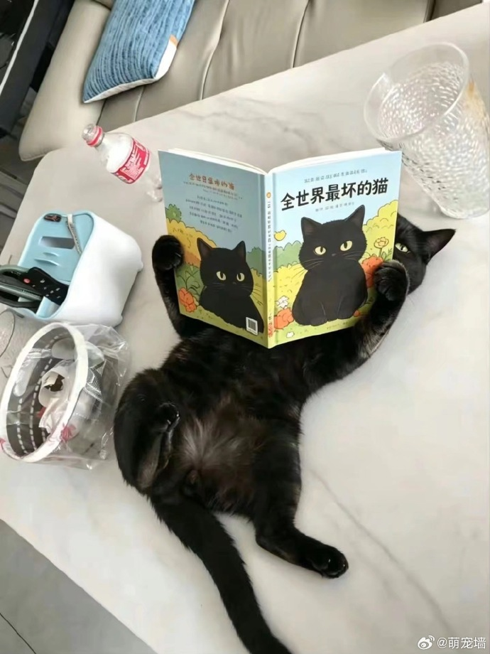
Monkey 翻开《全世界最坏的猫》，像在进行一场严肃的自我研究：哪些坏，哪些还不够坏。
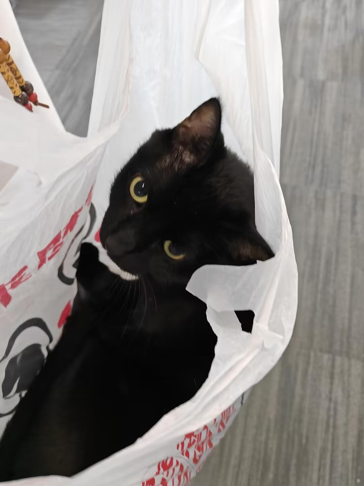
普通塑料袋在别人眼里是塑料袋，在 Monkey 眼里是可以进入另一个空间的临时洞口。
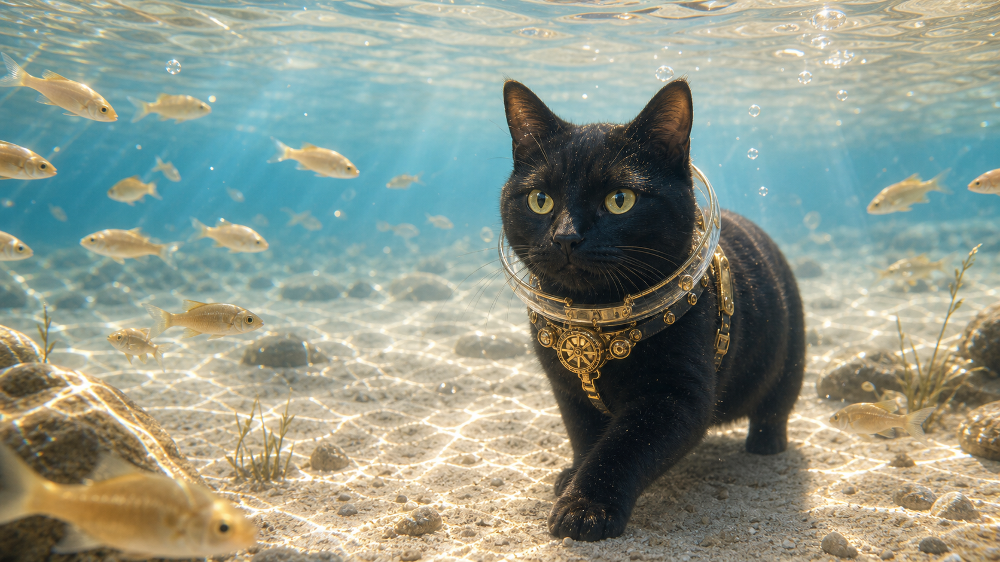
它穿过清澈暖蓝的水光、白沙和温柔鱼群，像在确认这片浅水秘境有没有被好好照亮。
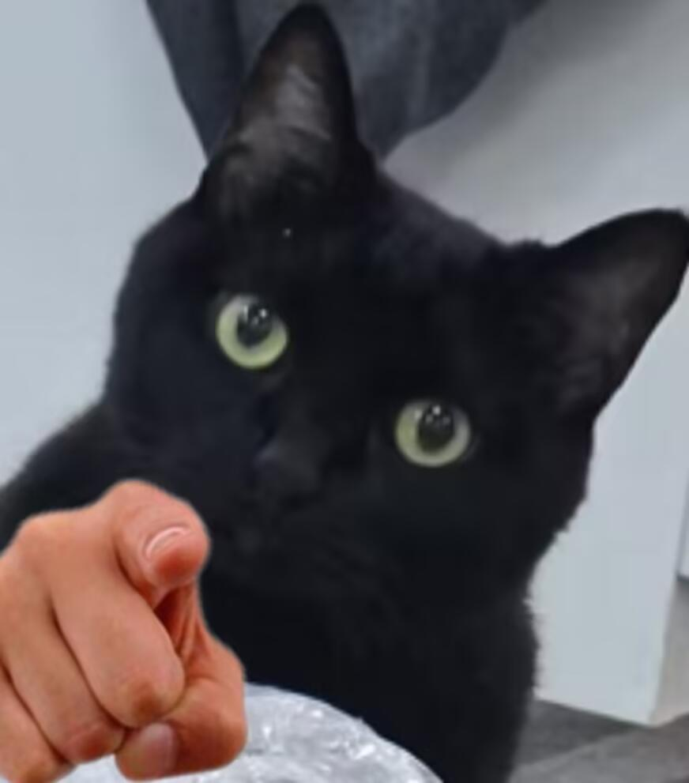
当 Monkey 这样看过来，任何解释都会变得多余。它已经完成了判断。
PERSONALITY FILE
戴蕾丝领可以，戴普通东西不一定可以。Monkey 接受装扮，但必须符合它的气质。
它不一定帮忙，但一定会出现。坐在工位旁边，就是它的项目管理方式。
纸袋、箱子、桌下空间，都可能被它判定为临时据点或未知副本入口。
它的陪伴不是热闹型，而是一直在旁边，用眼神确认世界还在正常运转。
IMAGE WALL
Monkey 的隐藏职业线重新拆成不同场景：B站程序员有守夜大屏、上班打卡、咖啡找 bug；水下冒险有小溪、珊瑚海、沙滩和暖蓝浅水。
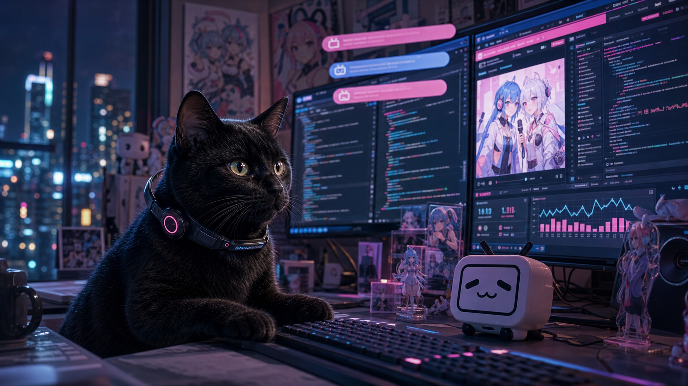
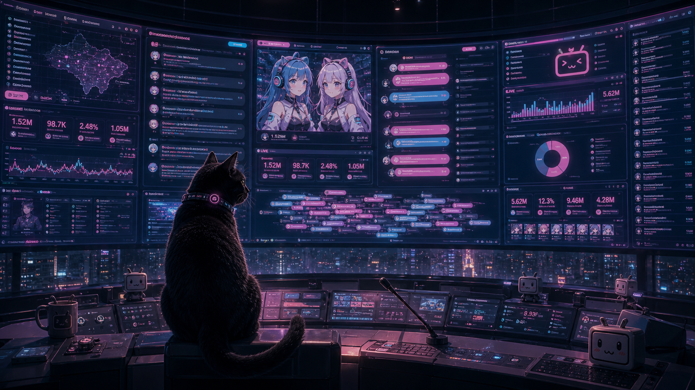
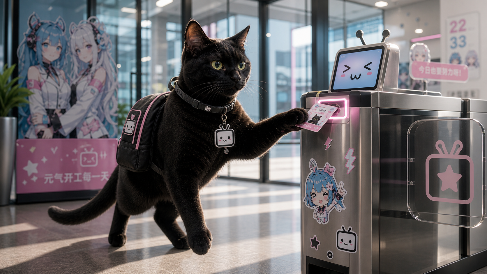
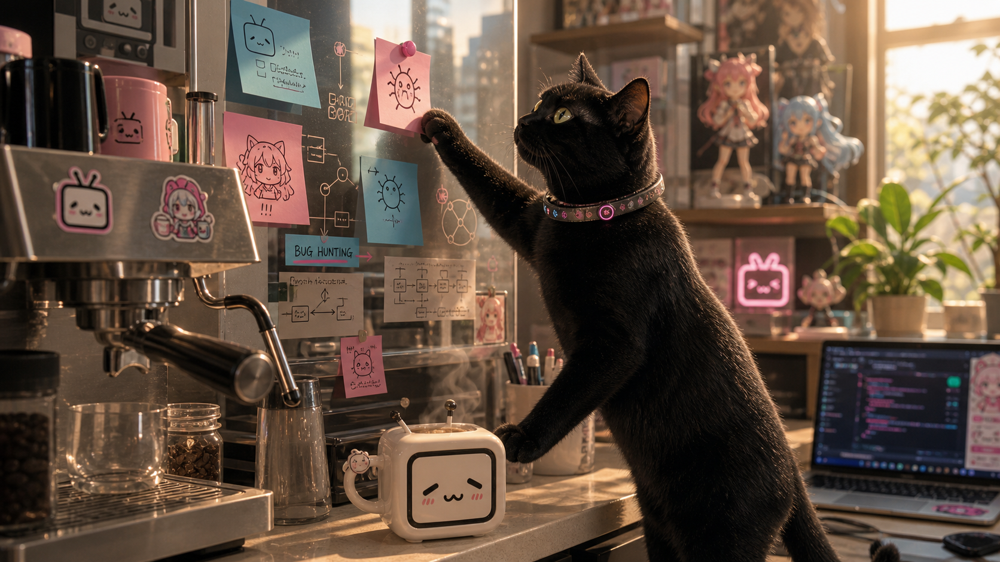
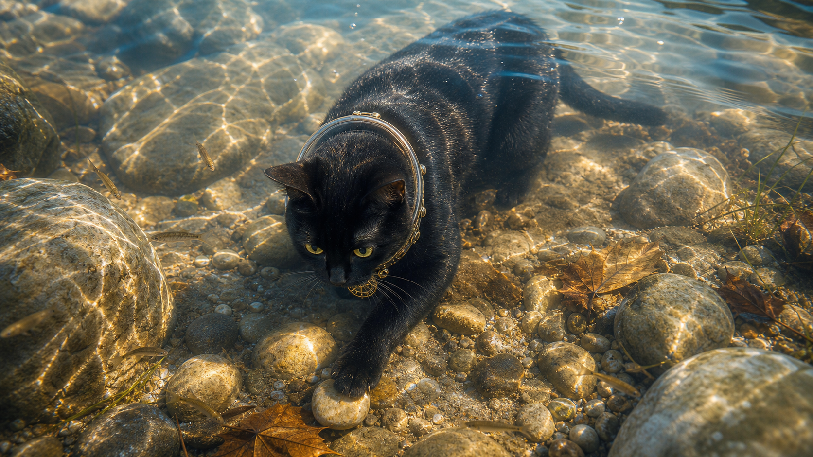
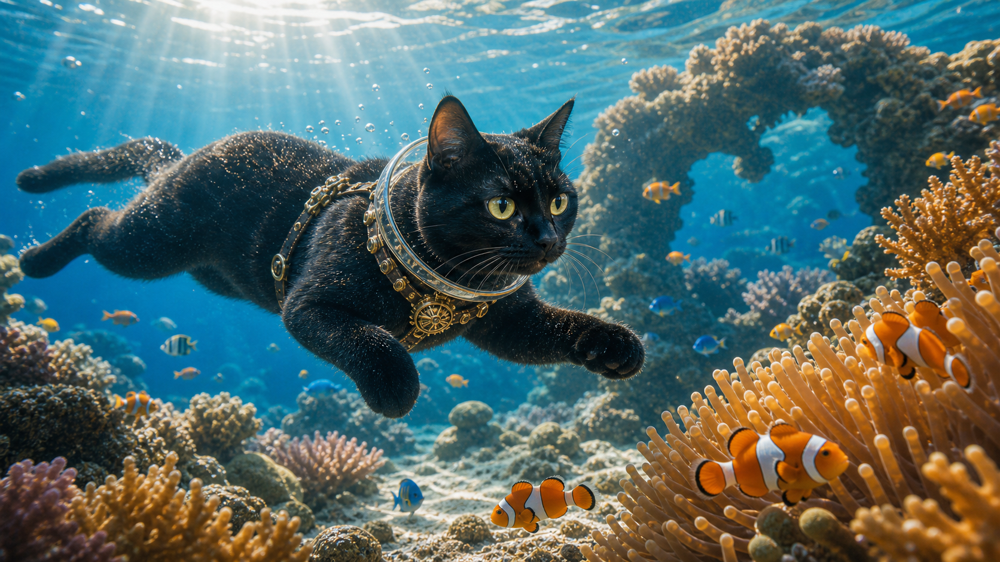
REALITY SNAPSHOTS
这些日常照片是奇幻职业的原点：它真的会监督工位、探索袋子、穿戴项链，并用眼神完成最终评审。
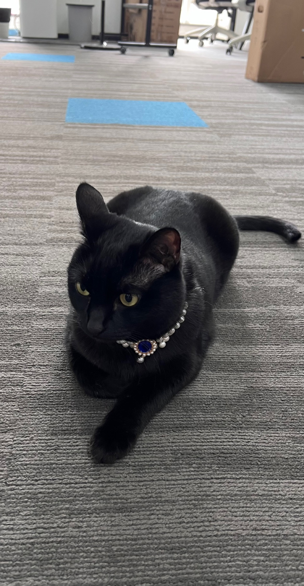
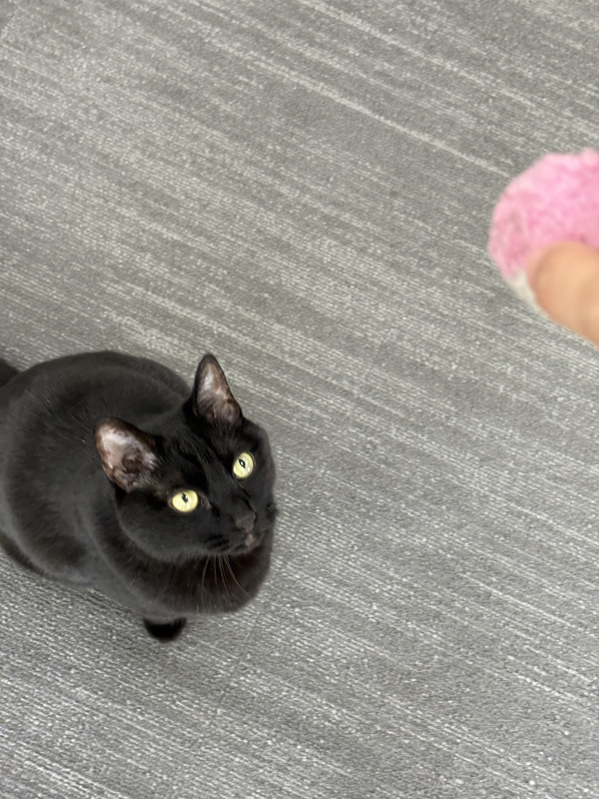
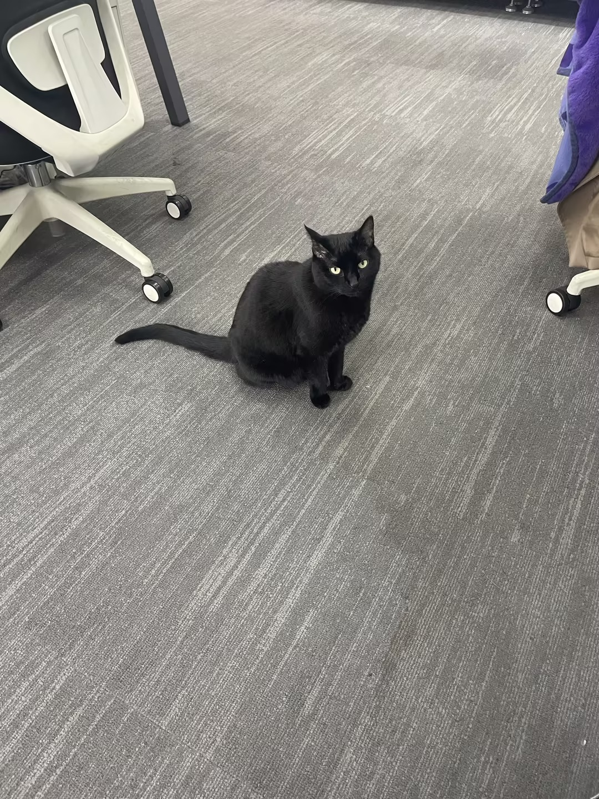
SECRET ROLES